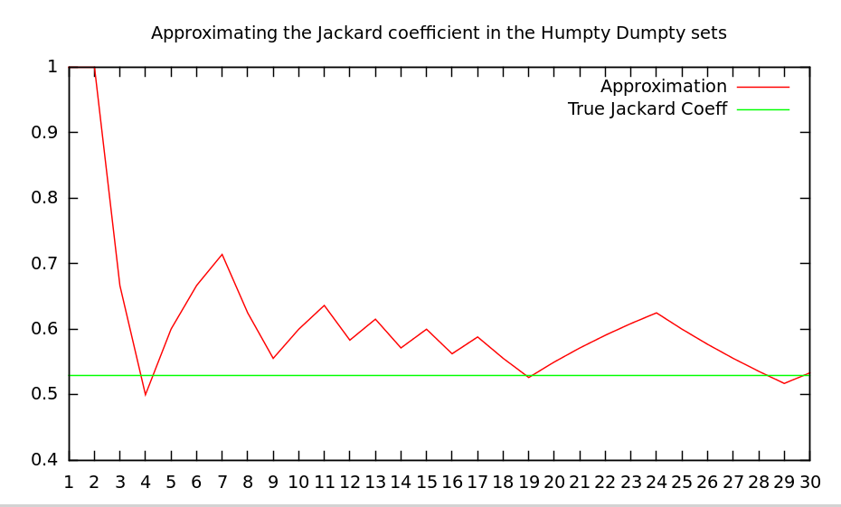

Say that you have a collection of N objects and you want to want to compare each object against each other. Maybe you are interested in the distance between objects in an Euclidean Space or just the number of attributes or features they share. If you need to perform each comparison, you’ll need to perform \(O(N^2)\) and that’s a problem when your N is in the order of the millions or tens of millions, likely the order of your user or item company’s database. Is there a way to perform less comparisons when we aren’t interested in the whole set of comparison but just in finding the set of closest items under a given measure? Yes, the Minhash Algorithm.
In this post we are going to be focused in the Jackard Coefficient for determining the closeness between two objects. Each of the N object will have a set of m features where m usually is very large. You can think of the objects in N as the members of a social network or Amazon customers, and the set of features that describe them all the friends they have in the social network or all the books they previously purchased in the second case. Comparing two users would imply comparing their feature sets using the Jackard Coefficient formula:
\[JackardCoeff(A,B)=\frac{|A\cap B|}{|A\cup B|}\]
All the MinHash functionality relies on this mathematical property
\[P(\min\pi(A)=\min\pi(B)) = \frac{|A\cap B|}{|A\cup B|}\]
Where \(\pi\) is a function that creates a permutation of its set argument. This reads as follow, Given a random function over the orderings of the elements of a universe U to which A and B belongs, the probability that the minimum element on both sets coincides is equal to the Jackard Coefficient defined as the number of elements in the intersection of the sets over the number of elements in the union.
What does this mean? Let’s break down the constituent parts. The function \(\pi\) is a function that transforms the natural ordering of a set into a new ordering. There are lots of different functions that create different orders for a given set. Let’s see this with an example.
Say that our set is the set of vowels in the alphabet \(V={a,e,i,o,u}\). A natural ordering of the elements would be \(a<e<i<o<u\). Another different ordering could be a function \(\pi_X\) that given the set of vowels V generates the following ordering \(o<e<i<u<a\). For convenience and since the ordering is a Total Order, we can map the elements of the set to the natural numbers taking the position of the element in the ordering. For the natural ordering of the vowels, \(\pi_{NAT}\), we have that
| Vowel | Order |
|---|---|
| a | 1 |
| e | 2 |
| i | 3 |
| o | 4 |
| u | 5 |
and with the other ordering \(\pi_X\) the vowels map to
| Vowel | Order |
|---|---|
| a | 5 |
| e | 2 |
| i | 3 |
| o | 1 |
| u | 4 |
Table:
Thus given an ordering, if we apply it to a subset of the universe of objects we get their positions in the new ordering. For instance: \[\pi_X(\{e,i,o\})=\{2,3,1\}\]
So going back to the original formula, the probability that the minimal value of the transformation of each set, say \(A=\{e,i,o\}\) and \(B=\{a,e\}\), according to a new orderding, \(\pi_X\), is equal to the Jackard Coefficient. In this case we can compute the Jackard Coefficient exactly and it is: \[\frac{|\{e,i,o\}\cap\{a,e\}|}{|\{e,i,o\}\cup\{a,e\}|} =\frac{|\{e\}|}{|\{a,e,i,o\}|} = \frac{1}{4} \]
This number means that whenever we pick a transformation \(\pi\) from the set of all possible transformations \(\Pi\) the probability that the smaller number is the same in both sets is equal to 0.25. Think that we are talking here about a probability and that it is not a rule. If the permutation choosen at random was the previously defined function \(\pi_X\) then we would have, \(\min\pi_X(A)=\min\{2,3,1\}=1\) that is not the same value as \(\min\pi_X(B)=\min\{5,2\}=2\).
Defining a random ordering for all the elements of a universe is costly. We have to maintain in memory the tables we saw for the vowels and that can not be practical when the universe of objects is large. So instead of maintaining the explicit random permutation we use the implicit permutation that hashing functions with good properties give us. The good properties we need is that the probability of collision in the universe is low because a random permutation is a 1 to 1 relationship between elements and positions and thus collisions in the hashing function would break this property.
From now on, I’m going to assume that every universe we need to work with is smaller than the range of integers and thus restrict all the derivations to integer since every set and ordering could be mapped to the natural integer ordering (\([0..2^{32}]\)).
Possible hashing functions for integers could be:
Use the FNV-1 hashing function of the string representation of your integer. This has the advantage that naturally deals with hashing sets of integers by means of concatenating their string representations.
Use a pseudo-random number generator by picking a large prime number, say \(p=2147483647\) and a set of coefficients \(\{a_i,b_i\}\) such our hashing functions are defined as \(\pi_{i} = (a_i x + b_i) \% p\)
In this post we will use the second kind of functions expresed in this Haskell code:
p :: Int
p=2147483647
coefs :: [Int]
coefs = unfoldr (Just . randomR (0,p)) $ mkStdGen 0
hashFuncs :: [Int->Int]
hashFuncs = go coefs
where
go theCoefs = let (a:b:[],rest) = splitAt 2 theCoefs
in (\x -> (a*x+b) `mod` p) : go rest So, given a hashing function, which is the minimum hash over a given set? This code gives you that result
minHash :: (Int->Int) -> [Int] -> Int
minHash f = foldl' hashAndMin maxBound
where
hashAndMin a b = min a (f b)OK, now you want to compare two sets, A and B to see how similar they are. The similarity measure here will be the number of items they both share, the Jackard coefficient. The time complexity of the set intersection is \(O(n+m)\) if you first build a Hash Map and then query it with the second set for existence. If both sets are already sorted you can compare them in \(O(n)\) \(O(m+n\log n+ m\log m)\).
Can you compare them faster? Yes, but only if you want to trade accuracy. The property in the probability formula at the beginning of the post states that with probability the Jackard coefficient the min hashes of the two sets will be equal. That means that if we take r different hashing functions (permutations) and we name s the Jackard coefficient between the tow sets, the probability that all k hashes of each set are equal is \(s^r\). Since this is a collection of Bernoulli trials, the distribution of having k min hashes equal in both sets follows a Binomial distribution with density probability function equal to:
\[f(k;r,s)= {r \choose k}s^k(1-s)^{r-k}\]
It is known that a random variable distributed according to the binomial distribution, \(X \sim B(r,s)\) has \(E[X]=rs\), so a good estimator of \(s\) would be to divide the number of matches by the number of hashing functions. This would give you the estimated value of the Jackard coefficient. But before comparing two fingerprints we have to compute them:
shingle :: Int -> [Int] -> [Int]
shingle c nums = [minHash f nums | f <- take c hashFuncs]The shingle function gives us a set of c fingerprints of our original big set of numbers.
So let’s see it in action. Imagine that we want to compute the Jackard coefficient between the bag of letters in the phrase Humpty Dumpty sat on a wall and Humpty Dumpty had a great fall. First let’s compute the Jackard coefficient according to the definition
import Data.List
import System.Random
import Data.Char
import Data.List
phrase1="Humpty Dumpty sat on a wall"
phrase2="Humpty Dumpty had a great fall"
mkSet = nub . filter isAlpha . map toLower
-- Set 1 is the collection of letters in the first phrase
-- "humptydsaonw"
set1 = map ord $ mkSet phrase1 -- "humptydsaonwl"
-- Set 2 is the collection of letters in the second phrase
-- "humptydagrefl"
set2 = map ord $ mkSet phrase2 -- "humptydagrefl"
jackard = a/b
where
a = fromIntegral $ length (set1 `intersect` set2) ::Double
b = fromIntegral $ length (set1 `union` set2) ::Double
p :: Int
p=2147483647
coefs :: [Int]
coefs = unfoldr (Just . randomR (0,p)) $ mkStdGen 0
hashFuncs :: [Int->Int]
hashFuncs = go coefs
where
go theCoefs = let (a:b:[],rest) = splitAt 2 theCoefs
in (\x -> (a*x+b) `mod` p) : go rest
minHash :: (Int->Int) -> [Int] -> Int
minHash f = foldl' hashAndMin maxBound
where
hashAndMin a b = min a (f b)
shingle :: Int -> [Int] -> [Int]
shingle c nums = [minHash f nums | f <- take c hashFuncs]
shingles1 = map (\x -> shingle x set1) [1..]
shingles2 = map (\x -> shingle x set2) [1..]
jackard2 = map approxJackard shingles
where
shingles = zip shingles1 shingles2
approxJackard :: ([Int],[Int]) -> Double
approxJackard (as,bs) = let pairs = zip as bs
matches = filter (\(a,b) -> a == b) pairs
num = fromIntegral $length matches :: Double
den = fromIntegral $ length as :: Double
in num/denIf we plot jackard2 we have an approximation based on the number of shingles:

OK, let me summarize a little bit.
So the solution is to transform each object into a set of c different values, and then perform the Jackard coefficient on the reduced set of values. For instance, each object could be the set of friends in a social network, and the value c could be for instance just 10. Here we reduce the computation of the intersection from the hundreds to just 10 values. Your friends got summarized in a set of 10 values.
Can we do better? Yes. Here we reduced the number of comparison from the cardinality of the number of features of the object to the small number c. But we still have to perform N comparisons against the N individuals in the population. Wouldn’t it be nice to just pick the individuals we think are more likely to have a high Jackard Coefficient? That’s possible with the use of bands but since this post is already very long, I’ll leave that for another post.
Minwise independent permutations The paper with the math that demonstrates the link between the Jackard Coefficient and the probability.
Chapter 3 of the excellent book “Minning massive datasets”